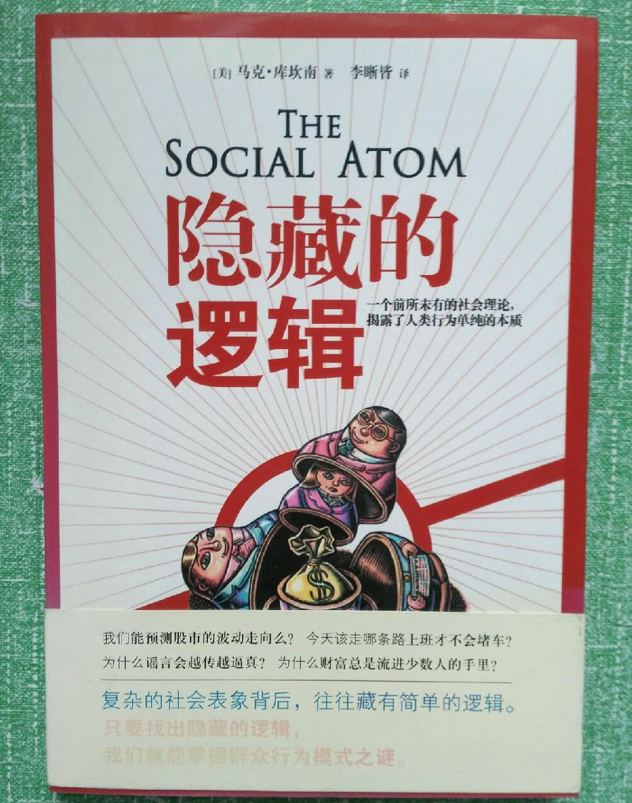

注：【】部分为笔者心得，非原文摘抄。
- 嘲讽要求进步的希望是最愚昧的，是精神贫乏和头脑枯竭后发出的最后声音。——Henry Louis Mencken
- 理解事物的唯一方式是对模式进行思考，而不是对人。
- 模式限制了人们的选择，使人们更可能按照巩固模式的方式来行动，加强模式的能量和影响力。
- 自我组织的本质就是过程 A 导致过程 B，接着 B 再导致更多的 A，A 又诱发更多的 B，如此不断循环下去，形成一个螺旋形的反馈机制。
- 导致事件结果的因素无穷无尽，也没有人能很有把握地说，什么因素是真正重要的，什么因素不重要。——【“成功人士”自传类地摊文学出版物除 外。】
- 相信历史的宿命就是纯粹的迷信，用科学的或其它理性的手段来预计人类的历史进程是不可能的。——Karl Popper
- 人类是融于大自然的一部分，而不是大自然的中心。
- 没有一个人完全符合经济学理论中理想化的理性人。
- 不是我们失去了理性，而是我们惯常的思维背离了理性。
- 在所有市场中，事件的极端变化要比根据常态数据推测出来的发生频率更平常。
- 人类不是理性的机器人，而是规则的适应者。
- 价格的涨跌是由不平衡的供求关系造成的。
- 驱动市场的动因其实是投资者策略的生态体系。
- 一般人缺乏独立思考的能力，不喜欢通过学习和自省来构建自己的观点，然而却迫不及待地想知道自己的邻居在想什么，接着盲目从众。——Mark Twain
- 因为别人并不一定通晓一切，所以模仿往往也会造成奇怪的失真，让模仿者付出惨痛的代价。
- 当人们跟随大流，违背自己的观点时，大脑活动在右脑顶内沟（掌控空间意识和知觉的大脑区域）处最为活跃；当人们成功地抵御住群体的压力时，大脑活动主要出现在与情感相关的区域，仿佛他们本能地感觉到，违抗群体观念会带来危险。
- 社会模仿纵然有搜集信息的好处，还是经常会把人们带离正轨。
- 人的行为受到人际影响，而这种影响力使得对群体行为做出预测变得极其困难。
- 解释任何事情的关键在于：关注重要的细节，忽略不重要的细节。
- 通过善意的行为，一个人可以积累别人对他的感激和义务。
- 在任何有可能发生欺骗的情况下，追逐自我利益的各方之间采取合作需要进行不断重复的互动，这样一个人才能利用自己的合作作为诱饵，诱使其他人合作。
- 要发现人类行为的规则，最好的方法不是依赖绝对理性或纯粹贪婪的理论优势，而是用物理学家对待原子的方式来对待社会原子，用实验来发现人的想法和情绪。
- 在衡量一个行为的正反两面时，一个人必须考虑的不仅仅是外在的收获，同时还必须估量内心的回报。
- 群体间在相互竞争时，更有凝聚力、合作性更好的群体就更有优势。
- 个体之间的自然筛选过程与互惠主义是反其道而行的，而群体之间的筛选过程与互惠主义却相辅相成。如果群体间的竞争足够重要，那么强烈的互惠主义行为就自然而然产生了。
- 人普遍分为两种：一种人认为科学无所不能；另一种人害怕科学无所不能。——Dixy Lee Ray
- 炮制阴谋时，人的想象力是无边无际的。
- 复杂的现象背后必有一种简单的规则在起作用。
- 世界上绝大部分的事物并非处在一种均衡的状态，相反，事物通常是不断演变的，因为反馈机制驱动了新模式的发展，从而代替了旧模式，而未来又会有另一种新的模式加以取代。
- 有时我们是理性的生物，但理性常常不是支配力量。
- 人们一般不是和别人讲道理，而是像撞球一样相互影响；是习俗引导着人们的行为，是（通常行为者所没有察觉的）习俗驱使人们去做那些不知道为什么要做的事情。——David Hume
- 严重的财富不均程度会腐蚀人类的满足感。
- 自然世界遭到破坏并不是由全球资本化与工业化所导致的，也不是“西方文明”或任何人类制度上的缺陷所造成的结果，而是一种特别贪婪的灵长类动物进化成功的结果。——John Gray
- 我们对人类社会大部分的不解，是因为我们的思考方式存在一个根本性的错误。我们喜欢在个体的特质上找原因，但是常常忽视了普通人的正常行为，它们同样也能导致意想不到的社会结果。
- 一个人之所以有价值，并不在于他拥有多少真理，或认为自己掌握多少真理，而在于他为了探索真理，做出了多少诚实的努力。因为真正让一个人的力量扩大的，不是对真理的占有，而是对真理孜孜不倦地探寻。单单做到这一点，这个人就趋近完美了。——Gotthold Lessing